YOLOv5快速上手使用【WIN】
本文最后更新于：2020年8月30日 下午
简述
最近实习中接触到 YOLO ，实时目标检测，我也没学过深度学习，对 YOLO 的原理并不太懂，不过它的能力确实是惊到我了，很短的时间内就可以将图片中的目标准确的识别出来。YOLO 简单说是一个目标检测的算法，特点就是快，一张图片只扫描一次，YOLO 面世也没几年的时间，现在已经第五版了，简单记录一下 YOLOv5 的上手使用过程！
YOLOv5 官方地址：https://github.com/ultralytics/yolov5
一、测试环境
- 系统：Windows
- 显卡：GeForce MX250
- 软件：PyCharm
- Python：3.8.5
- PyTorch：1.6.0
二、下载 YOLOv5
下载 YOLOv5 源码以及训练好的权重文件，当前最新版为 v3.0 ，一般下载最新版就可以了，或者直接 clone 。
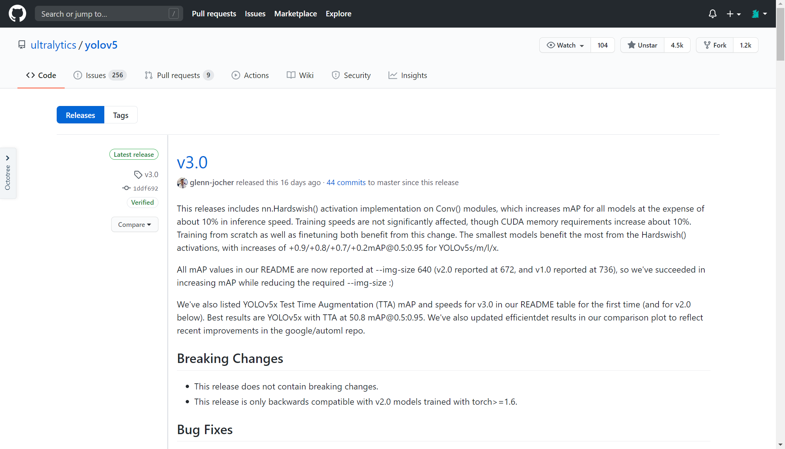
上面4个 .pt 文件时 YOLOv5 训练好的权重文件，越小速度越快，但精度越低，这里先 yolov5s.pt 用于测试，另外3个也可以自行下载下来试一试。
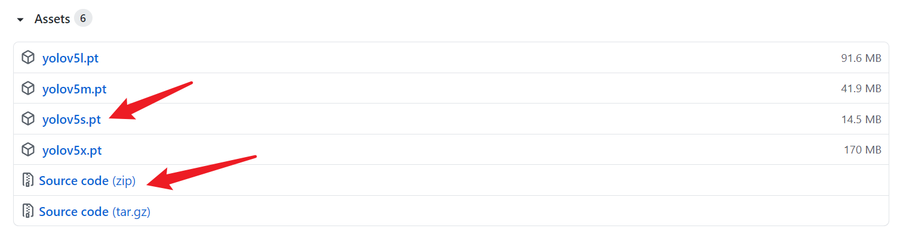
解压缩源码，将权重文件 yolov5s.pt 拷贝到源码根目录下的 weights 文件夹下。
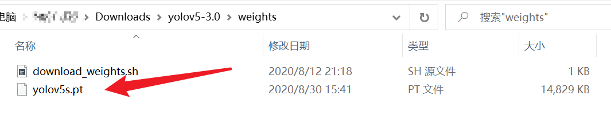
三、安装依赖
（1）配置虚拟环境（非必需）
用 PyCharm 打开项目文件夹（我个人使用 PyCharm 比较习惯了）~
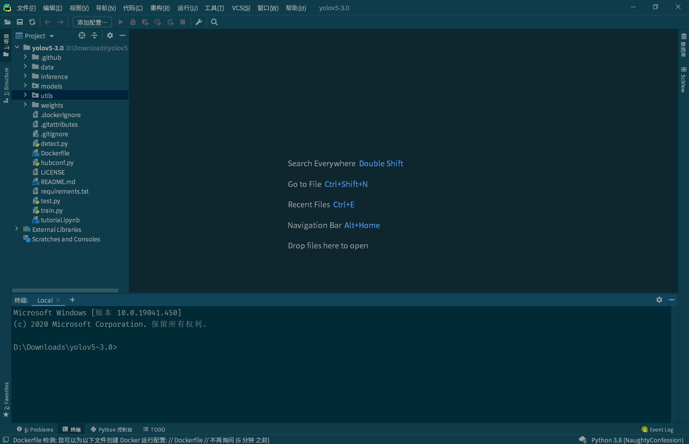
首先配置虚拟环境，点击文件 -> 设置 -> Python解释器 -> 添加。
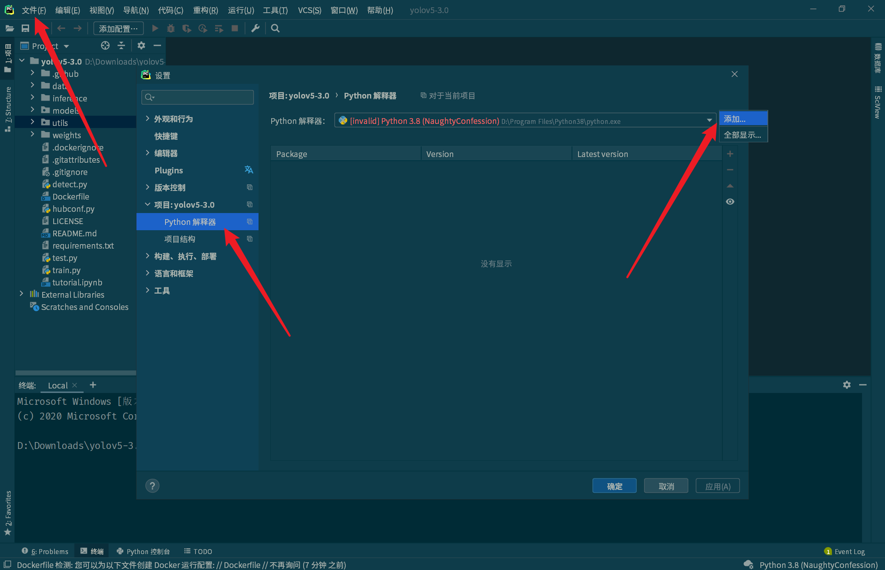
选择 Virtualenv 环境，选择新环境，基本解释器选择 Python3.8 以上的版本（官方说是需要3.8及以上版本），选择好后点击“确定”即可，PyCharm 会自动创建虚拟环境，稍微等一下。
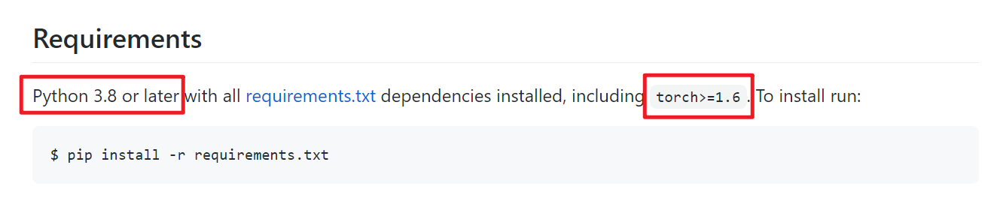
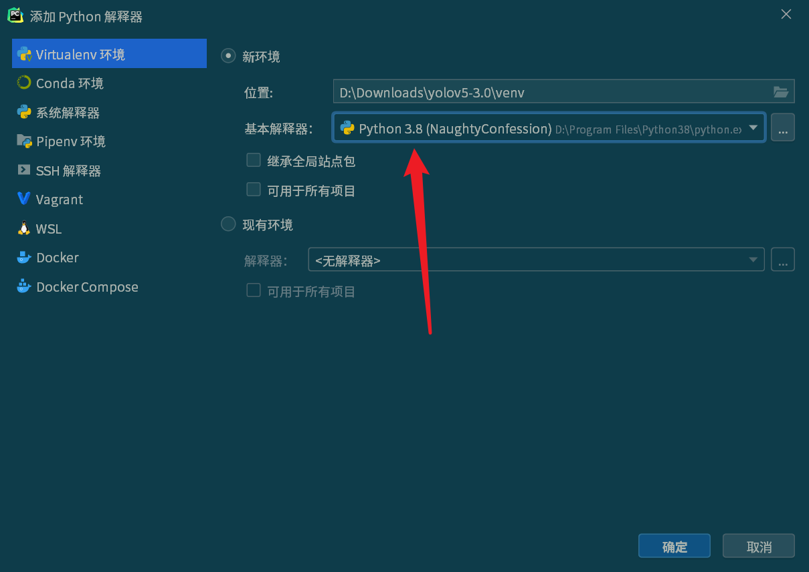
虚拟环境配置好后打开终端，确保路径前面有 (venv) ，即进入了虚拟环境。
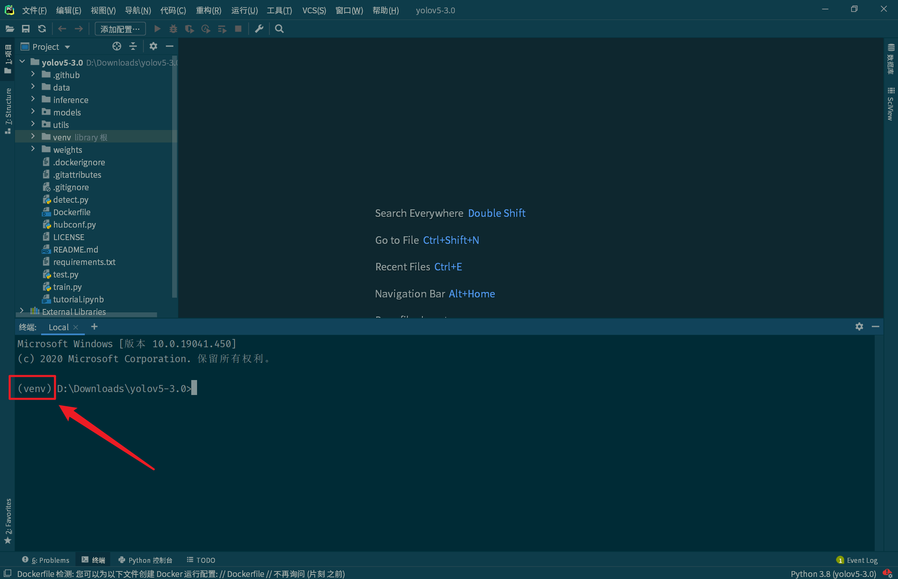
（2）安装依赖的包
可以试一下直接终端中执行以下命令，安装所需要的依赖，我个人经历是安装失败的，主要是 torch 和 torchvision 这两个包没有满足要求的版本。（这里 pip 安装包如果很慢的话建议自行百度配置一下 pip 的国内源）
pip install -r requirements.txt解决办法就是直接去 PyTorch 的官网上下载：https://download.pytorch.org/whl/torch_stable.html
当前的最新版就是1.6.0，直接搜一下 torch-1.6.0 可以帮助快速查找：
cu102是指 CUDA 版本，当前最新版是10.2对应102，如果电脑没有 GPU 则下载cpu开头的版本；torch-1.6.0即对应的 torch 版本，大于 YOLOv5 要求的1.6即可；cp38是指Python版本，使用 Python3.8 所以选择 cp38 的版本；- 我是 Windows 系统所以选择
win的版本，点击下载即可。
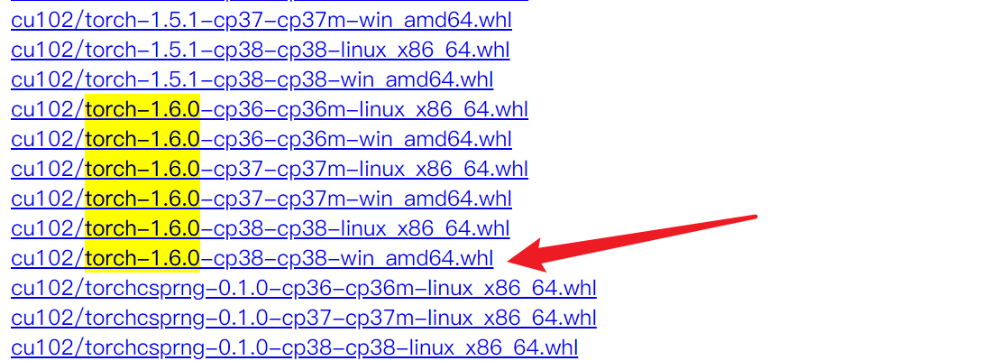
另外还要下载 torchvision ，同上一样的方法找到后下载下来。
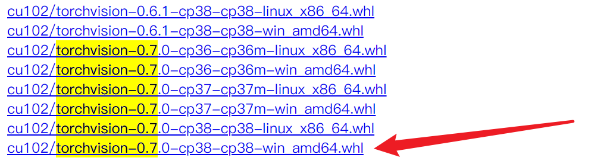
下载完毕后，将两个 .whl 的文件拷贝到项目根目录下备用。
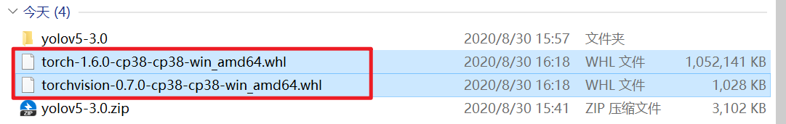
回到终端中手动安装这两个包，分别执行以下命令即可。
pip install torch-1.6.0-cp38-cp38-win_amd64.whl
pip install torchvision-0.7.0-cp38-cp38-win_amd64.whl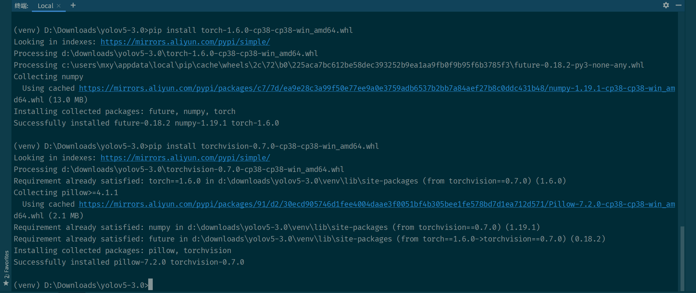
然后重新执行以下命令安装需要的包，应该就没有什么问题了。
pip install -r requirements.txt（3）是否支持 CUDA
安装完毕后打开Python控制台，输入以下命令测试是否支持 CUDA 。
import torch
torch.cuda.is_available()如果返回 True 则说明系统支持 CUDA 可以继续往下了。
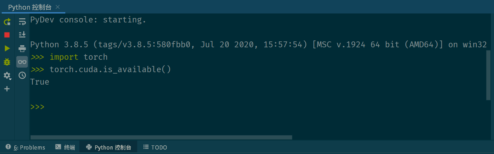
四、运行
接下来回到终端，直接执行如下命令即可测试YOLOv5了~
python detect.py --weights weights/yolov5s.pt支持的参数还有很多，不输入则使用默认参数：
(venv) D:\Downloads\yolov5-3.0>python detect.py -h
usage: detect.py [-h] [--weights WEIGHTS [WEIGHTS ...]] [--source SOURCE] [--output OUTPUT] [--img-size IMG_SIZE] [--conf-thres CONF_THRES]
[--iou-thres IOU_THRES] [--device DEVICE] [--view-img] [--save-txt] [--classes CLASSES [CLASSES ...]] [--agnostic-nms] [--augment]
[--update]
optional arguments:
-h, --help show this help message and exit
--weights WEIGHTS [WEIGHTS ...]
model.pt path(s)
--source SOURCE source
--output OUTPUT output folder
--img-size IMG_SIZE inference size (pixels)
--conf-thres CONF_THRES
object confidence threshold
--iou-thres IOU_THRES
IOU threshold for NMS
--device DEVICE cuda device, i.e. 0 or 0,1,2,3 or cpu
--view-img display results
--save-txt save results to *.txt
--classes CLASSES [CLASSES ...]
filter by class: --class 0, or --class 0 2 3
--agnostic-nms class-agnostic NMS
--augment augmented inference
--update update all models稍微解释一下一些参数：
- -h。如上，查看帮助文档；
- –weights WEIGHTS。指定权重文件（.pt），不使用的话默认参数为
'yolov5s.pt'； - –source SOURCE。指定输入源，可以是图片（或带图片的文件夹）、视频文件、也可以是摄像头或网络视频；
- –output OUTPUT。指定检测结果的保存路径；
- –img-size IMG_SIZE。指定图片用于检测的大小，必须是32的倍数（一般为320、416、640），传入任意大小的图片后首先会 resize 为该大小的正方形再用于目标检测，越小越快，精度越低；
- –conf-thres CONF_THRES。指定置信度阈值，保留高于该阈值的目标；
- –device DEVICE。指定要使用的 GPU ，不使用GPU的话则指定为
'cpu'即可； - –view-img。目标检测到后显示图片；
- –save-txt。将目标检测结果保存到文本文件中，记录了目标的分类、位置和宽高；
项目自带了两张用于测试的图片存储在 inference/images 文件夹下，成功运行将看到下图所示的信息，打印了默认的参数和手动设置的 weights 参数，使用了 GPU ，两张图片的检测分别耗时 0.072s 和 0.029 秒。
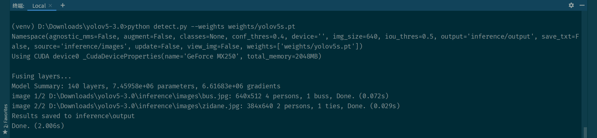
如果执行以上命令成功后，标注了目标的图片将会保存到 inference/output 文件夹下，效果如图所示。
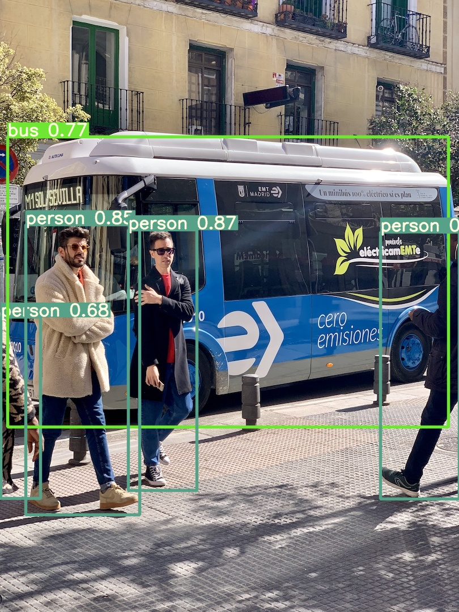
进一步的探索不再深入，本文目的仅在于将YOLOv5运行起来。
本博客所有文章除特别声明外，均采用 CC BY-SA 4.0 协议 ，转载请注明出处！